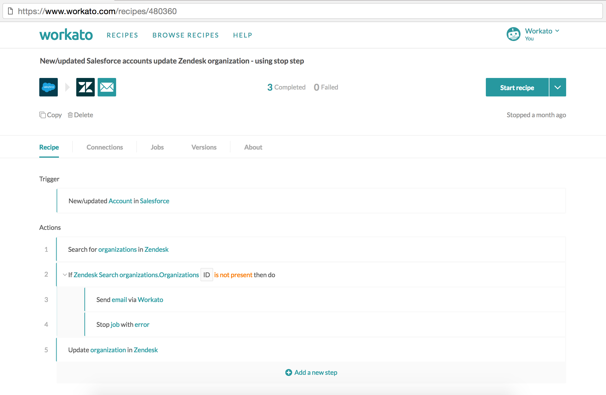
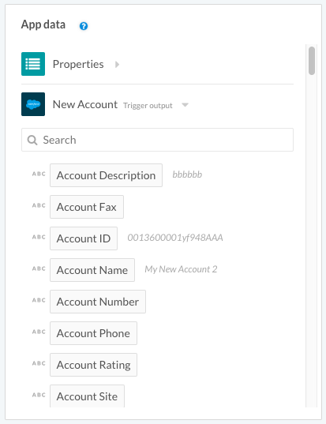
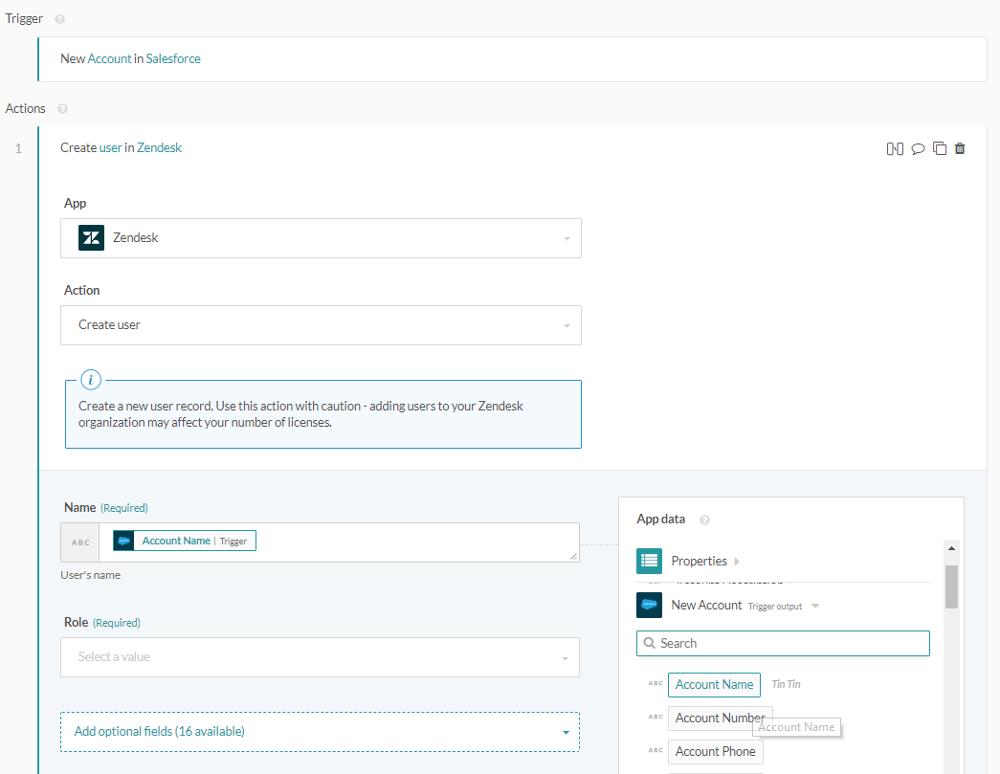
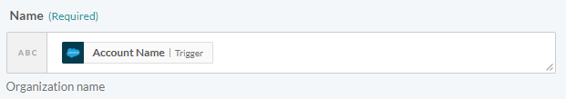
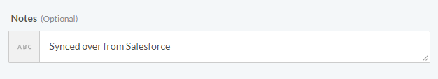
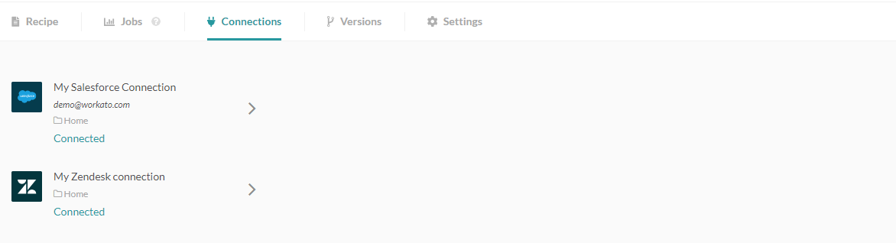

Concepts
Here are the core concepts and terminology that you'd need to know in order to use Workato.
Recipes
Recipes are automated workflows built by users that can span multiple apps, e.g. moving new Salesforce accounts into Zendesk as new organizations. Each recipe comprises of a trigger and one or more actions that are carried out when a trigger event is picked up.
When recipes are started and become active, they will run automatically in the background to listen to trigger events and carry out recipe actions. When they are stopped and become inactive, they will cease listening to trigger events.
However, when a recipe is started again, it will pick up all the trigger events that occurred since the recipe was stopped. i.e. stop functions like pause.
You can set recipe visibility to be public or private. When they are set to be public, any Workato member can see this recipe, and make a copy for their own use.
All recipes have a unique ID that identifies them.
 Recipe IDs can be viewed from the URL on the recipe page
The recipe above has a trigger and just one action. The trigger is New Salesforce account - this trigger will fire whenever a new account is created in Salesforce. The action Create Zendesk organization will create an organization in Zendesk each time the trigger event occurs (i.e. when a new account is created in Salesforce).
Triggers
Triggers determine what event to listen to in order to execute the actions described in a recipe
Trigger events can occur in apps (e.g. Salesforce, Jira, etc.), can be a timer driven (fires at a certain time or interval), occur when a new line is added in a file, etc.
Depending on the available API, Workato can receive trigger events in real-time, or check for the occurence of an event periodically (i.e. polled).
Steps and actions
Recipe steps are executed every time the trigger event occurs. Recipes are required to have at least one step. The most basic step for a recipe is an action e.g. an action to create an organization in Zendesk.
Workato steps can be actions, conditional actions, list actions, actions that call other recipes, try/catch, etc.
You can read more about recipe steps here and actions here.
Block
Data tree and pills
Every step including triggers brings data into the recipe. e.g. a new employee in Workday trigger would bring in employee data. This data is made available in the recipe via the 'data tree'.
The individual data fields are called data pills. You can use the data pills in subsequent steps. You can read more about data pills here.
The following is the output datatree for the trigger New Salesforce account. This datatree contains all the variables known to us and available for use whenever a trigger event occurs.
 Output datatree for New Salesforce account trigger
For example, as seen in the screenshot, whenever a new Salesforce account is created, we're able to get the following values for this particular new Salesforce account:
Account description,
Account fax,
Account ID,
Account name,
Account number,
Account phone,
Account rating,
Account site,
Account source,
etc.
These values can be used in subsequent steps of the recipe by being passed into input fields, as covered next.
Input fields and fields mapping
Triggers and actions have input fields. Input fields are how triggers and actions are designed to carry out customized workflows, and they can take in variables (datapills) or constants.
When we insert variables (datapills) or constants into input fields, that's called fields mapping. You can read more about fields mapping here.
The following is an expanded view of the Create Zendesk organization action. In this view, we can see two input fields: Name and Notes.
 Input fields for the action Create Zendesk organization
Mapping variables
The variable Account name has been mapped to the Name input field. This means that for every new Salesforce account that is created, the account name of this Salesforce account will be used as the organization name of the Zendesk organization that will be created. For example, a new Salesforce account named Sattei Winery will in turn create a Zendesk organization named Sattei Winery.
 Input field with variable mapping
Mapping constants
On the other hand, the input field Notes has a constant mapped to it - the words "Synced over from Salesforce." This means that all newly created Zendesk organizations created via Workato will always have the words "Synced over from Salesforce." in its Notes field.
 Input field with constant mapping
Here's an example of the new Zendesk organization created via the above mapping:
 Newly created Zendesk organization Sattei Winery
Newly created Zendesk organization Sattei Winery
Connections
For a recipe to communicate with apps via actions and triggers, it has to be authorized to interact with apps. This authorization is referred to as a connection. Connections are not tied to a recipe - a single connection can be used by multiple recipes. You can read more about connections here.
 Salesforce and Zendesk connections from the recipe view
Jobs
Each time there is a trigger event, the actions in the recipe are executed. The entire flow of each trigger event through the recipe is called a job. Jobs can be successful (when actions are executed successfully), or have errors (when an action results in an error). When an error is encountered, further actions are not executed.
Jobs report
The job report gives a high-level summary of the all the trigger events processed by the recipe. The entire flow of each trigger event through the recipe is called a job.
Information such as date, time processed and job IDs, can be found here. From this jobs history page, users can view more detailed information about a job by clicking on it.
You can read more about job reports here.
 Jobs report page
Jobs report page
Job details
The job details page provides step-by-step input/output details of a single trigger event as it is processed by the recipe. This page is useful for troubleshooting recipes as users are able to view the data passed into each step and the resultant output returned after each step was executed. You can read more about jobs and job details here.
 Job details page showing the syncing of Salesforce account Myers Brewery to Zendesk
Job details page showing the syncing of Salesforce account Myers Brewery to Zendesk